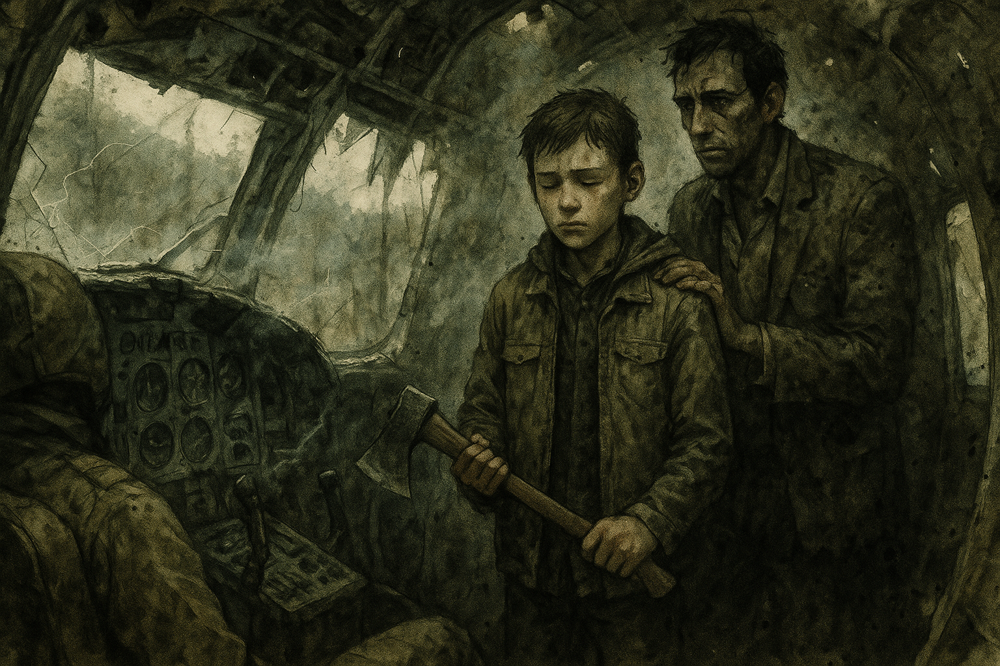

Smoke on the Ridge¶
Chapter 1 · 2026-09-07 · in-world 08/15/2030
No recording
The audio for this session failed. This page is written from the GM's notes, so it narrates the table's beats rather than quoting them.
Overview¶
An ordinary morning at the Hollow — knife practice, canning, snares, a window to stare out of — ended when a sound nobody in these mountains has heard in five years came out of the cloud bank: an engine, in the air. A cargo plane clipped the ridgeline and went down within sight of the smoke. The four survivors walked out to it and found a debris field, a dying pilot, a shattered sample case bound for somewhere called Station Ivy, and proof that somebody out there still has fuel, aircraft, and a schedule.
They also found that they were not the only ones who came for the smoke.
Key Events¶
The New Normal¶
Five years in, the days mostly get through themselves. Johnathan Banks was teaching Marcus Webb knife fighting — self-defense work, on a subject Banks himself knows almost nothing about. CJ was canning vegetables with Birdie Coyle. Chuck was walking his small snares for small game, and one large snare set for Bigfoot. Ash was reading, and staring out a window.
Under all of it, the same conversation everyone at the Hollow keeps having in pieces: winter is coming and the root cellar is nearly bare.
The Sign¶
Then the engine. Everyone stopped at the same moment, because some part of them recognized it before their brains caught up. It dropped out of the low grey ceiling over the ridgeline — small, single-engine, a boxy cargo pod slung underneath, faded purple and orange still readable under years of grime — and it wasn't flying so much as fighting. The engine died. A long few seconds of wind. Then the impact: not an explosion, just a heavy, final, wrong sound of metal meeting mountain, and a few seconds later the smoke and the smaller second blast of fuel catching.
Birdie read the smoke and put it at five to ten miles out.
Who Goes¶
All four survivors went. Marcus begged to come and Banks said no — and CJ overruled him: he's had to learn sometime, the days of babying are over. Banks conceded on one condition, that Marcus was CJ's responsibility.
Tucker Vance stayed behind and made the only request anyone made of them: bring back or at least catalogue any mechanical salvage. An engine could become a water pump, or electricity. Anything else becomes parts.
They took tarps, rope, a flashlight, and the rifle, and walked.
The Crash Site¶
The wreck was scattered across about a hundred and fifty yards of timber, and the whole slope smelled strongly enough of aviation fuel to taste it. They stopped at the edge of it before touching anything.
- Ash found a dead passenger with a clipboard held tight against his chest — the one thing he'd decided to hold onto. Most of the paper had burned. What survived was a partial flight log: a 0640 departure, forty percent fuel at the waypoint, relay strip 2 confirmed open and topped off, six passengers plus cargo IVY-4, a 0915 departure heading east-southeast, deteriorating weather, and Station Ivy expecting arrival by 1400 if the weather held.
- CJ turned up a satellite radio with a dead battery.
- Chuck found the IVY-4 case itself — military grade, and destroyed. Vials broken, whatever samples they held contaminated or gone. He came away with one intact document of record, which he has not shown the others.
- Banks found the cockpit.
The Pilot¶
One pilot was obviously dead, identified by nothing but a scorched name patch reading J. OKA. The other was barely alive, with the look of someone who knows exactly how long she has. She whispered three things:
"The samples… Don't radio, they are listening. Must reach Ivy."
Banks asked where Ivy was. She got out "East, near th—" and died.
The Hatchet¶
Then Banks brought Marcus into the cockpit and told him to take out his hatchet.
Marcus didn't understand at first. Then he did. Banks talked him through it — the training from before, the fact that the dead have to be dealt with this way or they come back — the way you talk someone through a thing you have already decided they are going to do. Marcus raised the hatchet, closed his eyes, and brought it down on the dead woman's head. Banks handled the other one.
They came out of the wreck with the boy blank-faced and the hatchet hanging bloody at his side.
Something in the Tree¶
While that was happening, CJ heard a walker hiss and could not find it, because it wasn't on the ground. It was above her, working its way out along a limb — the climbing herd, the first thing this table ever established about these mountains, finally arriving in person. It dropped on her.
She rolled with it, got her hatchet out, blocked the bite on her forearm, split its skull, rolled on top of it, hit it again, and took its head off.
Slow Clapping¶
The party was regrouping when applause came out of the treeline.
Three men walked out armed. Two more came out behind them a moment later. The one in front was looking at Banks, and he opened with a name nobody else there had ever heard: "Johnny Bank Notes."
Wade Tolliver — forties, weathered, quiet in a way that does its own threatening — runs trade and outside relations for the Last Stop. The unfinished Buc-ee's the survivors looked at, wanted, and decided would kill them is inhabited, and has been. Fifty people. Their leader is Emmet Castellan: former special forces, smart, dangerous, brilliant when he's lucid and self-medicating from the plaza's pharmacy shelf when he isn't.
And Banks was offered a place with that crew once, before, and turned it down.
The Split¶
Tolliver did honest math out loud: the party arrived first, so the initial salvage is theirs. But he has sick people, and he asked for the bulk of any medical supplies.
While the two groups talked, the searching continued. Marcus turned up a solar battery. Ash found an empty cooler. Chuck — who has spent years getting very good at finding things that aren't there — found a partially damaged semi-auto rifle, a case of money, and hospital-grade medical supplies, and called Tolliver's crew over to them.
The Herd¶
Then the sound nobody wants to hear, from every direction at once. The noise and the fuel and the blood had brought a herd in through the surrounding trees.
Two groups, one debris field, and walkers coming out of the timber. That's where the session ended.
Memorable Moments¶
- A boy, a hatchet, and a man who wouldn't do it for him. Banks refused to let Marcus come, lost that argument, and then chose to be the one who taught him what has to be done to the dead. The scene the whole table leaned into.
- "Don't radio, they are listening." Not get help. Not tell someone. A dying woman's last coherent instruction was to keep quiet, and nobody has any idea who she meant.
- The climbing herd, collected. Session zero's Unsetting Answer came due, out of a tree, onto the one survivor best equipped to deal with it — and CJ dealt with it alone, in silence, in three swings.
- Chuck out-searches everybody. The man with the Bigfoot snare found the rifle, the money, and the medicine. Years of looking for something that isn't there turn out to be excellent training.
- "Johnny Bank Notes." Five armed strangers walk out of the treeline and the first weapon anyone draws is a nickname.
- King Buc-ee has a king. The plaza Banks campaigned to rule in session zero is holding fifty people under somebody else — and Banks was invited in once and said no.
- Ash's haul. She found the single most important object of the session and an empty cooler.
Open Threads¶
- The herd is on top of them. The session ended mid-encounter, with two groups, an unclaimed debris field, and walkers coming in from all sides.
- Chuck's document. He kept one record out of the IVY-4 case and hasn't shown it to anyone. Nobody else knows it exists.
- Station Ivy is expecting an arrival that will never land. East or southeast, on a schedule, reachable by radio — and it is 1400 somewhere.
- "They are listening." Somebody monitors the airwaves. The Hollow has a satellite radio now (dead battery) and the group has the Watchman already broadcasting into their lives from somewhere out past the dial.
- West. The plane flew out of it, carrying a passenger out, not in. The place these mountains only tell as a fireside story just became a place with aircraft and avgas — and something worth fleeing.
- J. Oka. Four letters on a burned name patch. Nobody has said them to Sister Ruth Okafor yet.
- What Banks turned down. Tolliver offered him a place with the Last Stop crew and he refused. He hasn't told the others why, or that it happened.
- Fifty armed neighbors know where the Hollow's generosity starts. The medical supplies bought goodwill. They also bought information.
- What Marcus is now. He asked to be taken seriously. He was.
The Scene¶

The cockpit smelled like fuel and copper and something underneath both of those that Marcus didn't have a word for yet. Banks went in first, folded himself sideways through the gap where the door used to be, and Marcus followed because nobody told him not to. Daylight came through the windscreen in long broken pieces. There was a woman in the left-hand seat with her head back and her mouth open, and she had been talking to Banks four minutes ago, and now she wasn't. Marcus looked at the instrument panel instead. It was buckled in the middle like something had leaned on it.
"Take out your hatchet," Banks said.
He said it the way he said everything — flat, unbothered, like he was reading a number off a page. Marcus got it clear of his belt and held it in both hands and waited to be told what it was for, and the waiting went on a beat too long, and somewhere in that beat he understood, and his whole face changed. Banks saw it happen and didn't look away from it. "You know what happens if we don't," he said. "You've heard it your whole life. Everybody in that cabin has told you at least once, and every one of them has done it, and not one of them has ever let you in the room for it." He shifted, so he wasn't between the boy and the seat anymore. "You asked to come. This is what's out here. This is the whole of it."
Marcus said, "She was alive." Banks said, "She was. That's why it has to be now." The boy set his feet the way he'd been taught that morning, by a man who didn't know the first thing about knives, and raised the hatchet, and closed his eyes — which is the one part nobody would mention afterward — and brought it down. It landed. It landed badly and then it landed properly, and Banks stepped past him and dealt with the other one himself, unhurried, two strokes, the way you'd close up a shop. Then he put a hand between the boy's shoulder blades and steered him back out into the grey afternoon. Marcus came out of that wreck with nothing on his face at all and the hatchet hanging down at the end of his arm, wet, and CJ — who had just killed a thing that fell on her out of a tree, and hadn't told anybody yet — looked up and saw him, and understood that she had won the argument that morning.